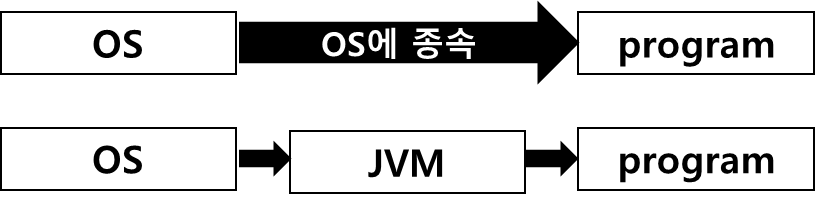
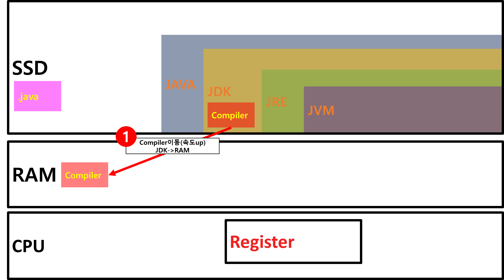
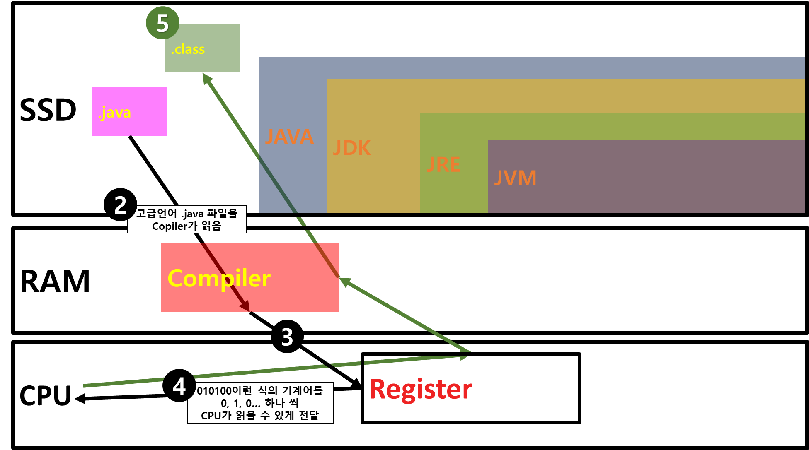
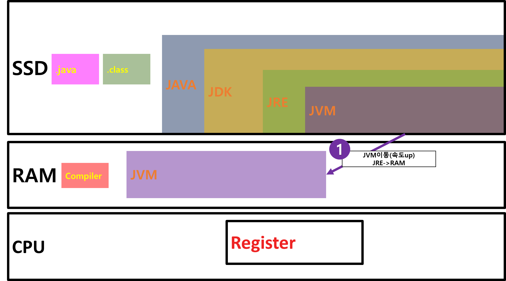
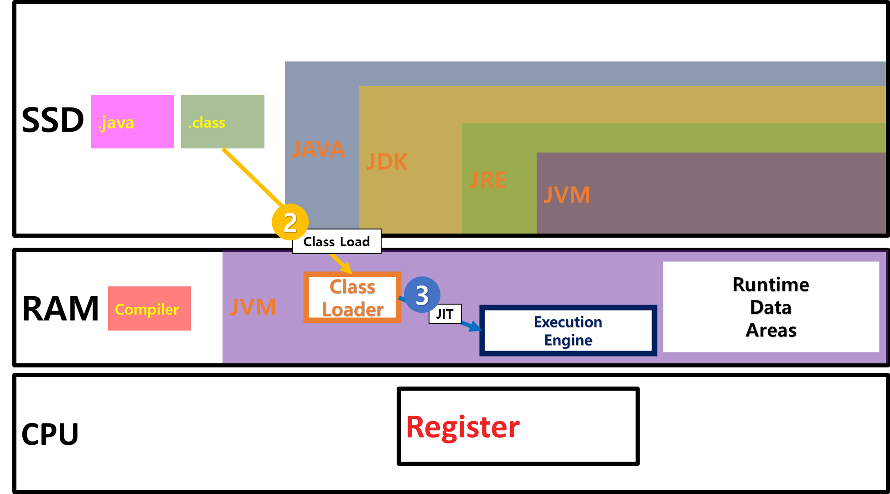

Java...
0. 목차
1. Programmer?
2. 기계어?
3. Code?
4. Compile?
5. Interpreter?
6. Java?
7. JVM?
8. JVM 원리
9. 전자정부프레임워크?
1.Programmer?
▶ Programmer란?
▷ Program 을 만드는 사람
▶ Program이란?
▷ CPU(컴퓨터)에 작업을 지시하는 수단
▶ Programmer란?
▷ CPU(컴퓨터)에 작업을 지시하는 수단을 만드는 사람
- Source Program : 문자열 프로그램
- Programming : Programmer가 CPU(컴퓨터)에 작업을 지시하는 수단을 만드는 행위
2.기계어?
▶ 알파벳
▷ Programmer가 Programming을 할 때 사용
▷ CPU는 알파벳 해독 불가
▶ 기계어
▷ CPU가 읽는 언어
- 기계어: 0,1로 이루어진 수
- 이진수: 0,1로 이루어진 수
- bit: 0,1로 이루어진 수
- bit(binary digit): CPU가 표현할 수 있는 최소단위(0=false, 1=true)
3.Code?
▶ bit의 의미전달 한계점
▷ bit는 0(false)과 1(true)로 표현
‘사과는 맛있어?’ = 0과 1로 대답 가능
‘사과는 무슨 색이야?’ = 0과 1로 대답 불가
▶ bit를 조합한 부호
▷ Code로 대답가능
사과가 무슨 색?
빨간색 = 0100,
파란색 = 1110
같은 bit를 조합한 부호로 대답 가능
▶ Code는 bit를 조합한 부호,약속 된 부호
▷ ASCII(American Standard Code for Information Interchange)
- 8비트(8비트=1바이트)
- 기호, 알파벳 대소문자, 숫자 표현가능
- 처음으로 표준을 적립한 문자열 인코딩 방식
▷ unicode
- 16비트
- 기호, 알파벳대소문자, 숫자, 전세계 언어 표현가능
4.Compile?
▶ Compile
▷ 알파벳으로 작성 한 Code가 CPU에 전달 되기까지 어떤 과정을 거치는가?
고급언어 = 알파벳
낮은 수준의 언어 ≠ 기계어
고급언어인 알파벳이 바로 기계어로 변환 안됨
고급언어 > 낮은 수준의 언어 > 기계어
순으로 변환 됨
▷ Compile은 Compiler로 고급언어를 한 단계 낮춰주는 것
‘이클립스’라는 툴을 이용해서 자바 웹 개발자가 알파벳으로 코딩을 하고 저장하면,
Java는 Compile과정을 거쳐 .java와 .class 파일 두 개를 생성
.java는 고급언어, .class는 낮은 수준의 언어
▷ .class파일은 Compiler가 compile한 결과, 즉 낮은 수준의 언어
.class = 중간코드 = 바이트코드
5.Interpreter?
▶ Interpreter
▷ compile한 .class가 CPU에 전달 되기까지 어떤 과정을 거치는가?
interpreter는 compile한 .class를 한 줄 한 줄 기계어로 변환시켜 CPU에게 전달
▶ Compile 후 Interpreter vs 바로 Interpreter
▷ Java는 하이브리드 언어
Java는 compile도 하고 interpreter도 하기 때문에 하이브리드 언어
6.Java?
▶ .class는 왜 만드는가? Interpreter로만 만들어도 되지 않나?
▷ Java는 Platform의 영향을 받지 않을 순 없을까? 하는 취지에서 나온 것
Platform = OS = windows, linux…
프로그램을 실행
7.JVM?
▶ JVM(Java Virtual Machine)
▷ Java가 OS에 종속되지 않는 이유는 JVM 때문

▶ Java는 JVM이 OS별로 존재
▷ 그래서 JVM이 노트북에 설치되면 .class파일을 어떤 OS에서든 실행가능
▷ JVM은 Java의 Interpreter
8.JVM 원리
▶ Compiler 이동


▶ JVM 이동
 
▷ Class loader
JVM안에 있는 class loader가 .class를 읽어들임
Class loader가 .class파일을 읽어들이는 행위 : class load
▷ Runtime Data Areas
OS가 Java에게 할당해 준 메모리
OS:java너 프로그램 만들 때 이만큼만 써!!
▷ Execution Engine
- Interpreter
이게 Java의 핵심
JIT란 기술이 이 안에 있음
- JIT(Just In time)
A,B 해석 완료
근데 또 A가 나옴
이를 또 해석하지 않고 이미 해석 한 A를 가져옴
이게 바로 JIT
9.전자정부프레임워크?
▶ 전자정부프레임워크
▷ 행정안정부에서 개발자들이 개발을 편하게 할 수 있도록 만든 Framework
- Framework
: 여러가지 기능을 설계 해 두어 개발을 할 수 있게 하는 곳
- Spring 기반
Spring : Java로 만든 Framework
- 라이브러리
: 개발에 필요한 도구들
▷ 전자정부프레임워크는 Spring이라는 틀을 라이브러리로 장식한 것
▶ 전자정부프레임워크의 장단점
▷ 장점
- 라이브러리는 하나하나 버전이 있음
- 무조건 최신버전이 아님
- 여러가지 버전 중에서 최대한 *안정성*이 있는 것으로만 만듦
- 굉장히 안정성있음
▷ 단점
- 톱니바퀴처럼 딱딱 맞춰놓은 것이기 때문에
- 입맛대로 최신버전을 끼워넣을 수 없음